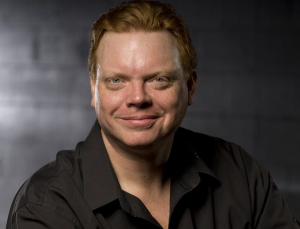

Workshop i Viewpoints og Suzuki med SITI Company (USA) - 6 dager. FRIST 13/3
- Kategori:
- Tverrfaglige kurs for viderekomne.
Tverrfaglige kurs for viderekomne.
Åpent for profesjonelle skuespillere og andre profesjonelle deltakere innen spesifiserte felt med lang erfaring. Se søknadsteksten for spesifikasjoner. Send CV. - Dato:
- 09.05.2016 til 14.05.2016
- Start kl :
- 10:00
- Slutt kl :
- 15:00
- Pris:
- 950,-
- Adresse:
- Sentralen, Øvre Slottsgate 3, Oslo
Intensive Workshop in Suzuki and Viewpoints for experienced actors and dancers, held by Leon Ingulsrud from SITI Company, New York.
The workshop will be devided into two daily sessions:
1030-1230 Suzuki
half hour break
1300-1500 Viewpoints
You will have to be able to attend all 6 days of the workshop.
Påmelding via Skuespiller- og danseralliansen, påmelding åpnes på https://skuda.no/kurskatalog 12. februar 2016.
Ved spørsmål om kurset, send mail til tone@skuda.no.
The workshop is physically demanding and can be hard on the legs and knees. Please let us know if you have any physical concerns that might affect your participation, and if so, how you plan to take care of your body during the workshop.
About the techniques and training philosophy:
SUZUKI METHOD
Developed by internationally acclaimed director Tadashi Suzuki and the Suzuki Company of Toga, the Suzuki Method’s principal concern is with restoring the wholeness of the human body to the theatrical context and uncovering the actor’s innate expressive abilities. A rigorous physical discipline drawn from such diverse influences as ballet, traditional Japanese and Greek theater, and martial arts, the training seeks to heighten the actor’s emotional and physical power and commitment to each moment on the stage. Attention is on the lower body and a vocabulary of footwork, sharpening the actor’s breath control and concentration.
VIEWPOINTS
A technique of improvisation that grew out of the postmodern dance world. It was first articulated by choreographer Mary Overlie, who broke down the two dominant issues performers deal with—time and space—into six categories. She called her approach the Six Viewpoints. SITI’s Anne Bogart and our company members have expanded Overlie’s notions and adapted them for actors. The Viewpoints allows a group of actors to function together spontaneously and intuitively, and to generate bold, theatrical work quickly. It develops flexibility, articulation, and strength in movement and makes ensemble playing really possible.
Leon Ingulsrud was born and grew up in Japan as the son of Lutheran Missionaries. In the early nineties, Leon helped found SITI Company and has appeared in many of its productions. Previous to SITI, Mr. Ingulsrud was a member of the Suzuki Company of Toga for seven years during which time he appeared in Homage to Homo Ludins, King Lear, Dionysus, Macbeth, Ivanov and Greetings from the Edge of the Earth. During this time, Mr. Ingulsrud also served as a resident director at the ATM Arts Center in Mito, Japan. Mr. Mr. Ingulsrud has also served two years as an artistic director of Swine Palace in Baton Rouge LA. Ingulsrud has taught in workshops and universities around the world, and holds an MFA in directing from Columbia University.
{kind=link}
For more information:
Read more about: SITI Company
Suzuki Method (http://www.scot-suzukicompany.com/en/), and Viewpoints (http://www.sixviewpoints.com/).
Workshopen er for erfarne skuespillere og dansere.
I samarbeid med
{kind=link}